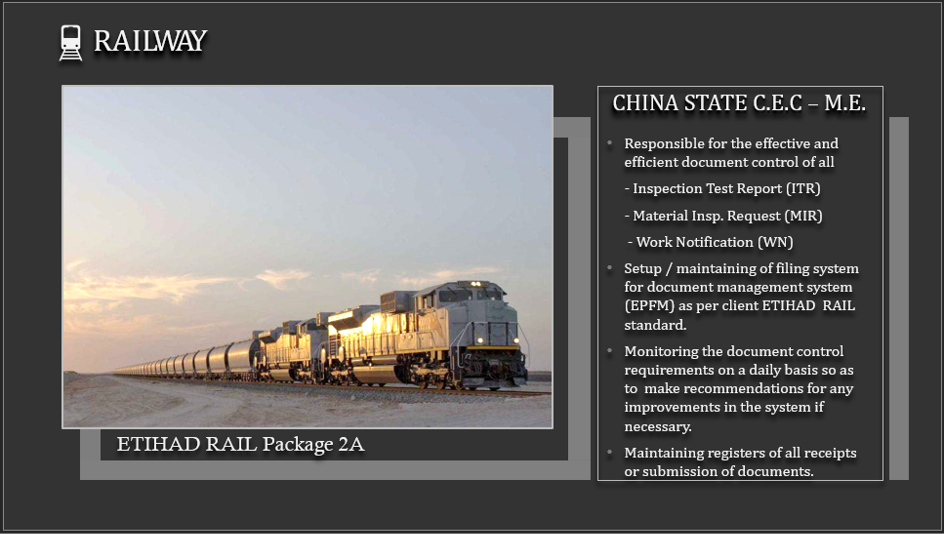
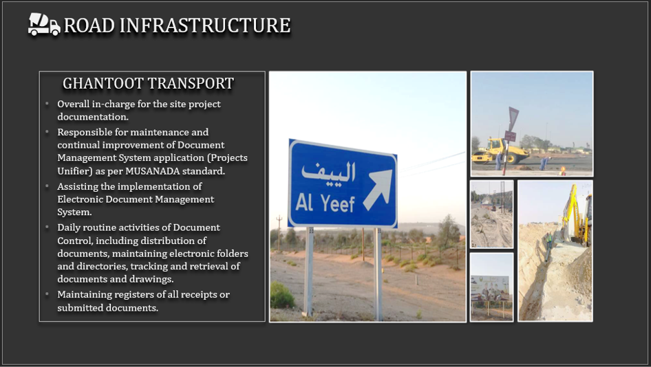
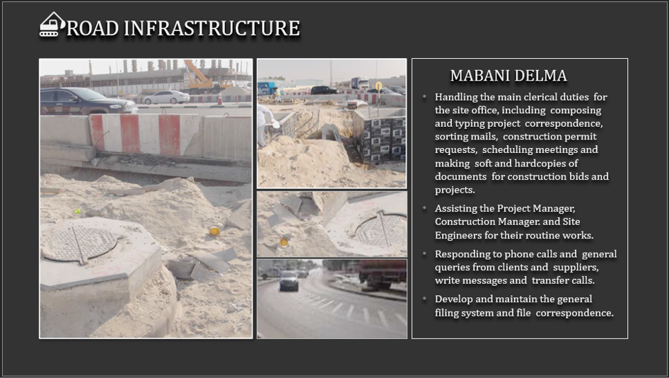
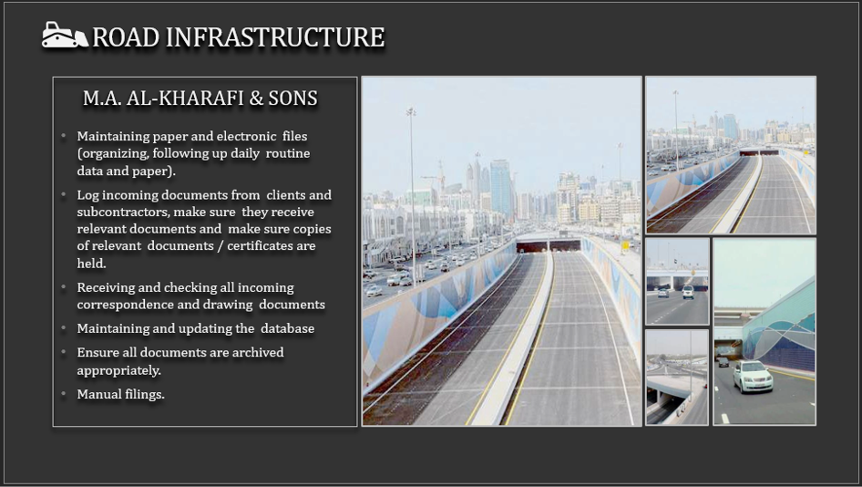
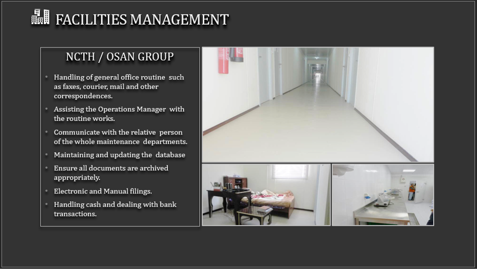

Hi. My name is Norman, a passionate Document Controller based in Abu Dhabi, United Arab Emirates.
Previously worked with China State Construction Engineering Corporation and was assigned as a Document Controller (QAQC Department) for
ETIHAD RAIL Project in Ghweifat-Ruwais, Western Region, Abu Dhabi U.A.E.
For the past 15 years, I have been associated with several companies related to the construction industry, specializing in documentation
and clerical tasks such as preparation of correspondences, transmittals, and submittals for materials, drawings, and project reports.
Dailÿ maintenance of all register logs as well as uploading data using Electronic Document Management System (EDMS) like Primavera
Projects Unifier by MUSANADA, ORACLE Aconex and Etihad Rail Engineering Document Management System - Production Environment (EPFM).
I can describe myself as very resourceful and ambitious at the same time. I can find solutions, get creative and solve problems without
needing the help of co-workers or managers. I know when to ask for help, and I don't hesitate to approach the concerned person if I need
assistance. But when it is possible to handle something without occupying the valuable time of others, I do it and consider myself very
good at it.
Work Experience
China State Construction Engineering Corp. (Feb-2020 - Present)
Project: Etihad Rail Network (Stage 2)

My primary role involves managing and maintaining the Inspection Test Request and Material Inspection Request for Etihad Rail Project Package 2A under the QAQC Department. This includes manually managing and maintaining the Inspection Test Request, which consists of over 85,000 files, and the Material Inspection Request, which has over 1,500 files using Microsoft Excel.
In addition to these responsibilities, I assist other departments and subcontractors with the preparation and submission of inspection requests. This involves uploading all approved documents to the EDMS application using OpenText Documentum.
Ghantoot Transport (Sep-2019 - Feb-2020)
Project: Internal Roads for Residential Plots (Al Yeef-Liwa)

As the overall in-charge of clerical and documentation works for the Internal Roads at Residential Plots in Al Yeef - Liwa City Project, I am responsible for overseeing all document control activities, including the preparation and submission of correspondences and transmittals, materials and drawing submittals, and all kinds of reports, including daily, weekly and monthly reports.
In addition to these responsibilities, I also assist my colleagues and higher management personnel in the implementation of MUSANADA's Electronic Document Management System application.
Mabani Delma General Contracting (Mar-2013 - Dec-2015)
Project: Transmission System (Ghalilah) / Sewerage (Al Quoz)

As the overall in-charge of clerical and documentation works for two projects, namely:
Transmission System from Ghalilah to Rams in Ras Al Khaimah, U.A.E.
Sewerage & Drainage for Al Quoz Industrial Area, Dubai, U.A.E.
Working on these two projects has made me realize the importance of being organized and practicing proper documentation discipline as a document controller. Specifically, I was in charge of assisting the closing manager in the preparation of documents for the extension of time for the first project, while simultaneously starting the documentation process for the second project.
M.A. Al-Kharafi and Sons (Jan-2009 - Nov-2011)
Project: Salam Street (Second Part)

For the Salam Street Project - Second Package, I was tasked with physically arranging all hardcopies within the project documentation room. This involved manually segregating project documents, labeling them, and sorting them in ascending order based on both the types of files and the respective departments they belonged to.
Trans Emirates Elec. and Mech. Works (Jan-2016 - Aug-2019)
As the overall in-charge of clerical and documentation works for three projects, namely:
ADCO-BAB Expansion Project
Three Residential Buildings - Khalifa City A
Baniyas Cooperative Society - HQ
My role as a document controller was put to the test during the ADCO-BAB Expansion Project when a misunderstanding between my company and another company led to a dispute that required court hearings to settle. However, my discipline in practicing proper documentation played a significant role in helping my company win the case.
This experience reinforced my belief in the importance of accurate and organized documentation, which is essential to avoid any potential legal issues that may arise in the future.
OSAN Group (Nov-2011 - Feb-2013)
Project: ADNOC Camp Management / Shah Gas Project
As a Site Secretary / Document Controller in the Camp Facilities Management team at ADNOC Shah Gas Project, my primary role is to maintain a record of all incoming and outgoing personnel at the camp.
Additionally, I am responsible for arranging rooms and ensuring they are ready before the arrival of incoming staff from different companies. I also coordinate with other departments by informing them of the incoming and outgoing staff for their own records.
National Corporation for Tourism and Hotel (Jun-2007 - Jan-2009)
Project: Abu Dhabi Marine Operating Company

As an Office Assistant at the Head Office of Abu Dhabi Marine Operating Company (ADMA-OPCO), my primary responsibility is to assist all staff members, particularly the department secretary of the Maintenance Department, with micro-tasks such as scanning documents, photocopying, data entry, sorting, gathering, and binding documents for the preparation of submittals, as well as submissions of reports to various departments.
Common Responsibilities
Responsible for the timely, accurate, efficient preparation and management of documents.
Control & maintain the system for issuance recording / filing, tracking, retrieval of documents like procedures, plans, QA/QC
records, specifications, drawings and related documents.
Control the numbering, sorting, filing, storing, and retrieval of both electronic and hard copy documents produced by technical
teams, projects, or departments.
Ensure that all controlled documents related to the Project are maintained to the latest issue, and that these documents are made
available at all locations where operations essential to the effective functioning of the Quality Management System are performed.
Update and maintenance of the project document control data base by monitoring all incoming/outgoing project documentation.
Compilation of all files and submission to client for review and approval.
Performs other duties commensurate with functional level and responsibilities.
Familiarity with all phases of Project including Pre-Construction, Construction and Closeout.
Add value to engineering project deliverables, proposal packages, and marketing collateral via advanced level word processing,
technical editing, and maintaining quality assurance.
Using an electronic document management system (EDMS) to index, store and retrieve a wide variety of document types (for example,
security, training records or engineering drawings) such as Sharepoint, Aconex, Primavera Projects Unifier, etc.